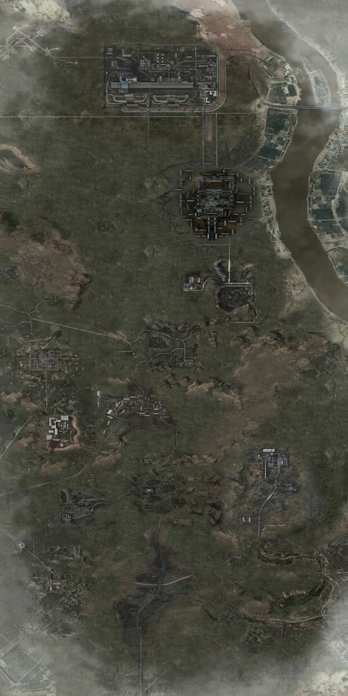
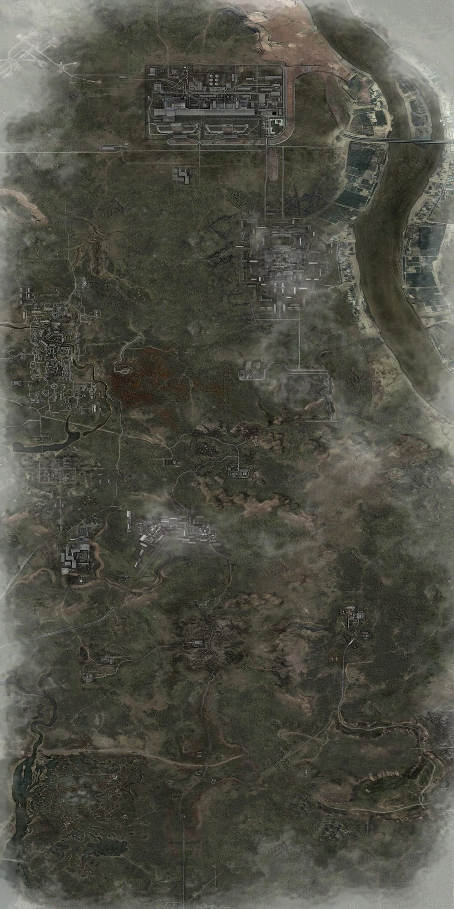
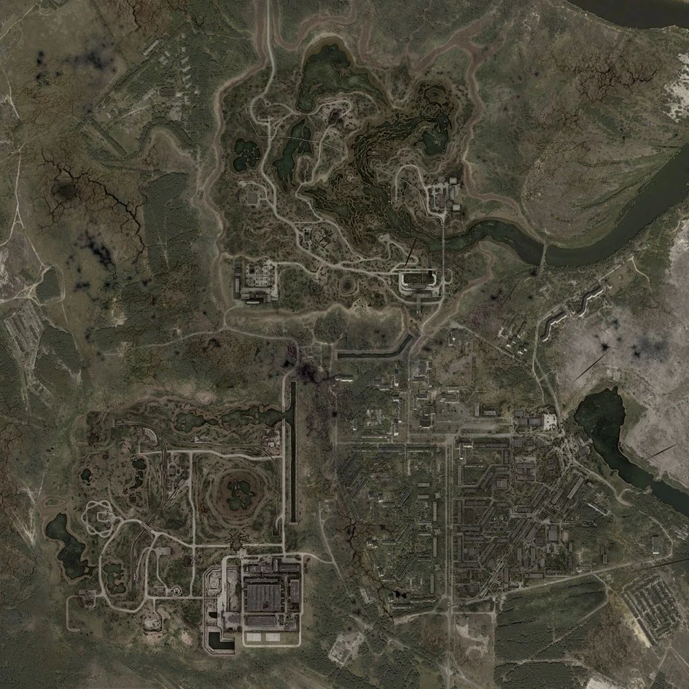
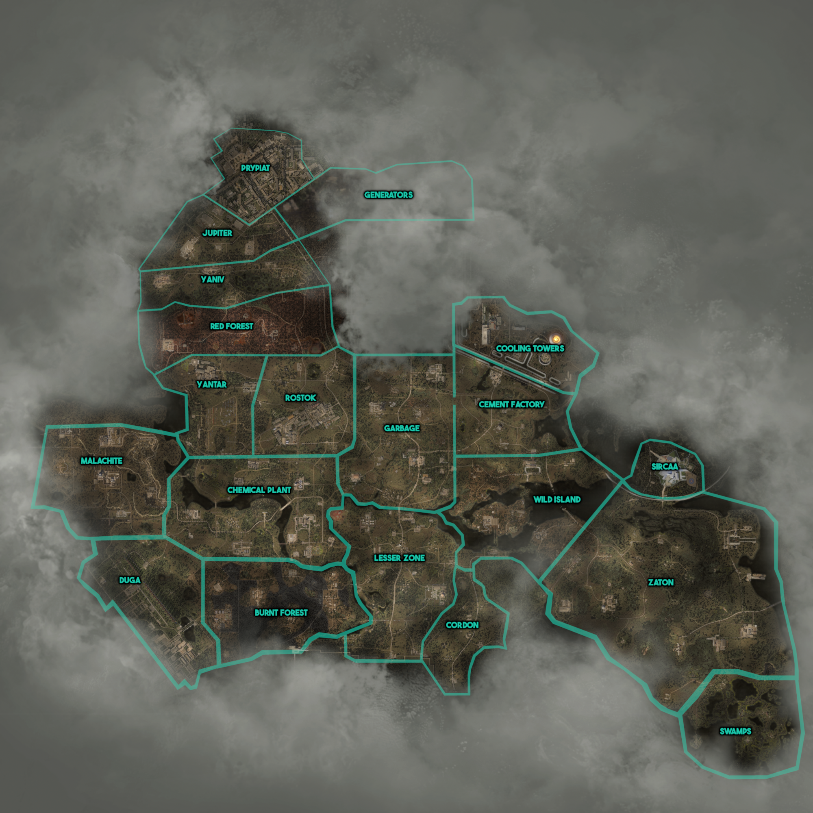

S.T.A.L.K.E.R. Maps
Головна
Турнір
Новини
Мапи усіх частин S.T.A.L.K.E.R.
Мапа S.T.A.L.K.E.R.:Shadow of Chornobyl

×
Мапа S.T.A.L.K.E.R.:Clear Sky

×
Мапа S.T.A.L.K.E.R.:Call of Pripyat

×
Мапа S.T.A.L.K.E.R. 2: Heart of Chornobyl

×